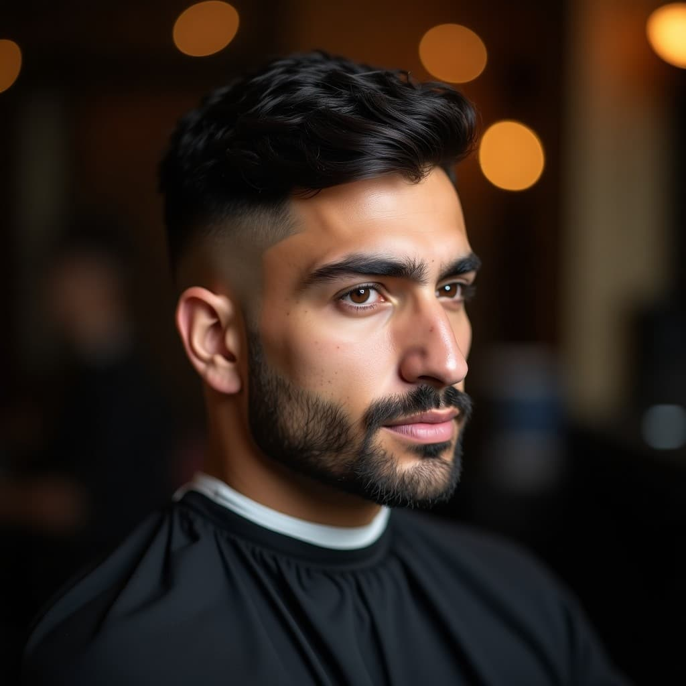
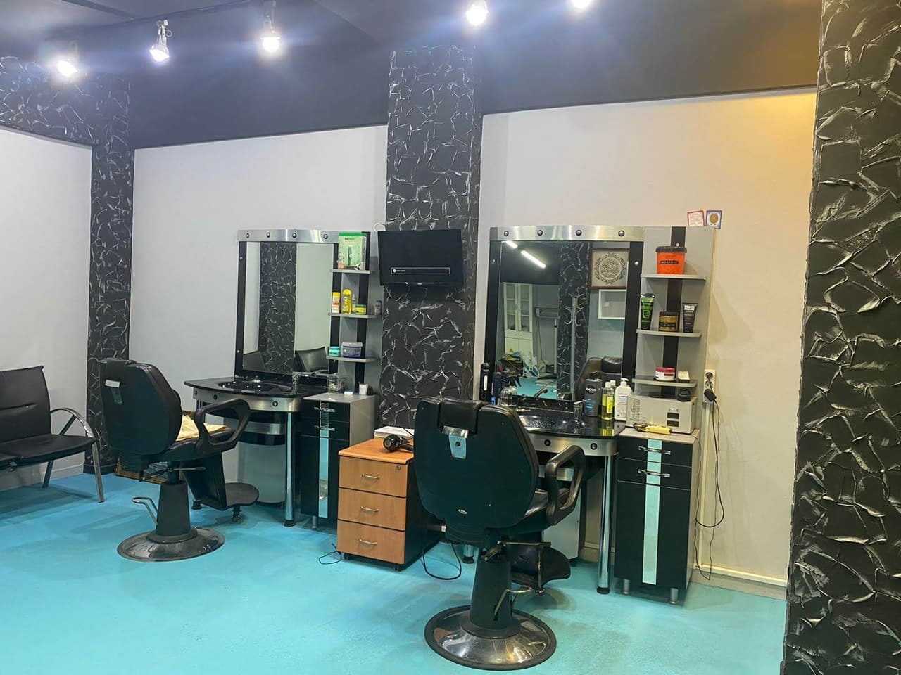
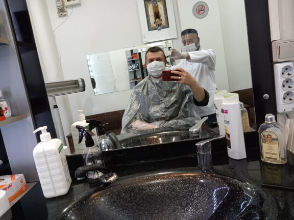
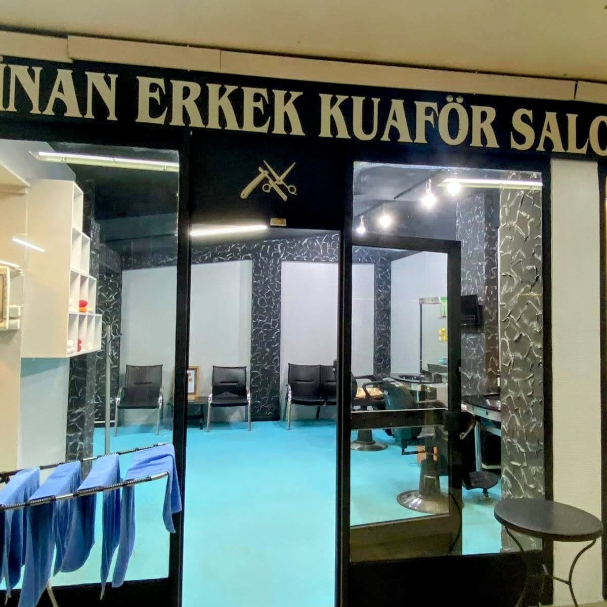
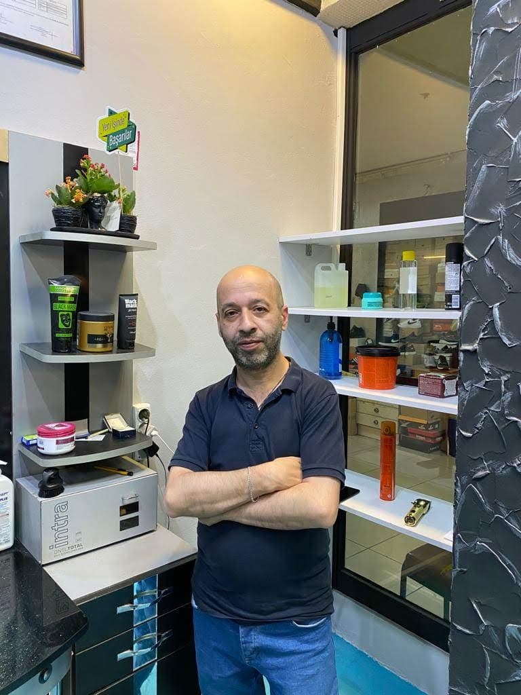

Yüz şeklinizi seçin; size yakışan modelleri fotoğraflarıyla görün, beğendiğinizi randevunuza ekleyin.

Hizmeti, günü ve boş saati seçin. Randevunuz WhatsApp'tan onaylanır, takviminize hatırlatma düşer.
Dolu saatler üstü çizili görünür.
5 tıraşa 1 tıraş bizden. Kart telefonunuzda, kaybolmaz.
Yayında her randevu sonrası damga otomatik eklenir.
İstediğiniz modele ve saç yapınıza göre, ayrıntıya dikkat edilerek yapılan erkek saç kesimi.
Sakalınızın şekline uygun, temiz ve düzenli bir görünüm için sakal kesimi ve şekillendirme.
Düzenli bakım isteyenler için pratik ve özenli tıraş hizmeti.
Yeni bir tarz denemek istiyorsanız yüz hatlarınıza ve saç yapınıza uygun seçenekleri birlikte değerlendiririz.
Omuz boyu gibi kesim ve model değişikliği isteyen hanımlar için de saç kesimi yapılır.
Özel gününüz öncesi saç ve sakal bakımı için randevuyla ilgilenilir.




Müşterilerimiz Sinan Usta'yı pozitif, güler yüzlü ve misafirperver buluyor. Burada kendinizi rahat hissedersiniz.
Kesime başlamadan önce beklentinizi sorar, saç tipinize uygun olanı birlikte konuşuruz.
Yıllardır aynı saç stilini kullananlar, önerilerle yeni bir tarz denedi ve sonuçtan memnun kaldı.
Her işe acele etmeden, titizlikle yaklaşırız. Memnun kalan müşteriler bizi çevresine tavsiye ediyor.
📍 Mimar Sinan Mh. Kassam Çeşme Sk. 12, Mimar Sinan, Kapalı Çarşı No:141, 34672 Üsküdar/İstanbul
🕑 Pzt–Cmt 08:30–19:30 · Paz kapalı